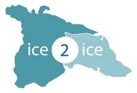

The Ice2Ice project aimed to investigate the role of Arctic sea ice on the observed abrupt events in the past glacial. What mechanisms are important in the relationship between the Greenland Ice Sheet and the Arctic sea ice?
My involvment started at the Ice2Ice phd school in September 2015, working on a project combining the fields of climate proxy records and climate modelling.
The international, graduate student led project resulted in the paper
Jensen et al. (2018): A spatiotemporal reconstruction of sea-surface temperatures in the North Atlantic during Dansgaard–Oeschger events 5–8.
Visit the Official website.
